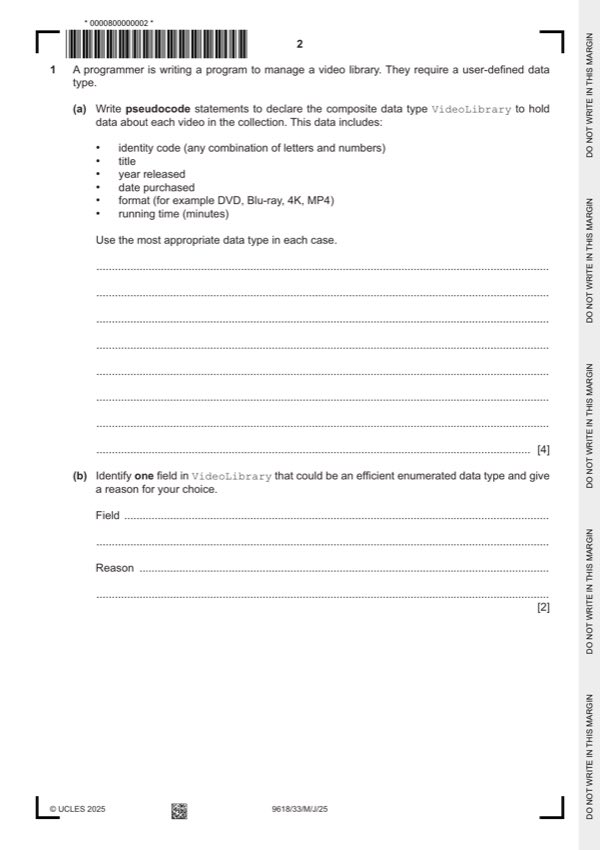
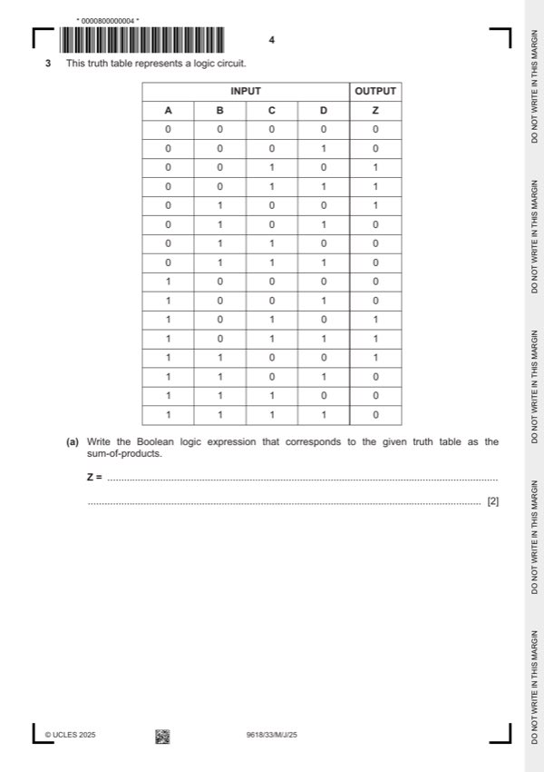
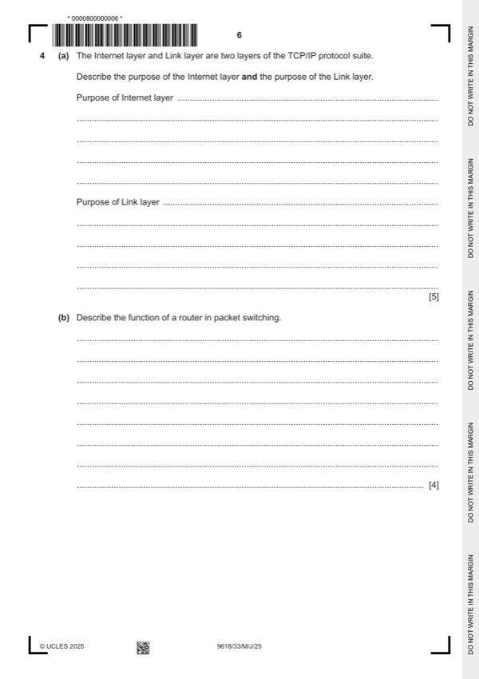
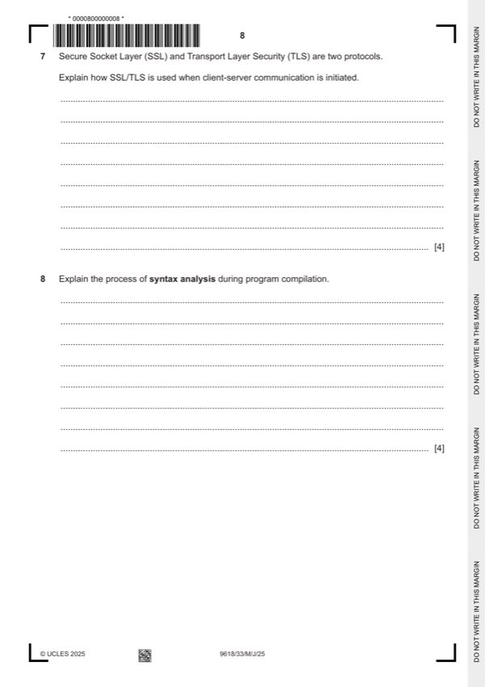
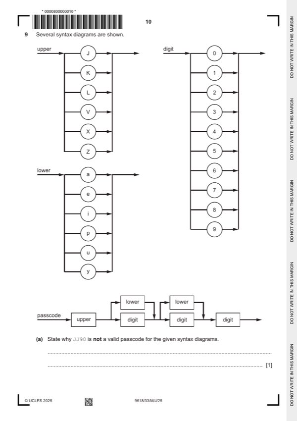
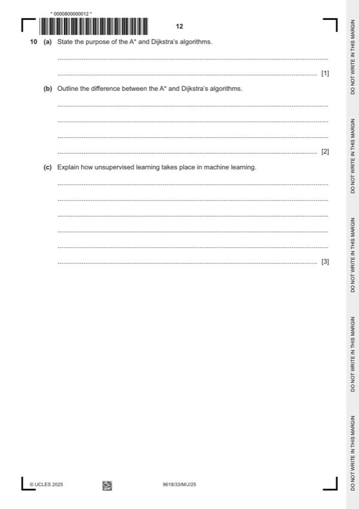
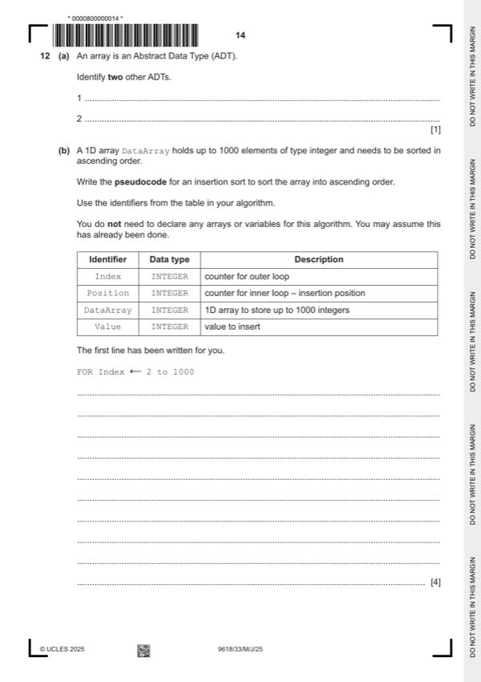
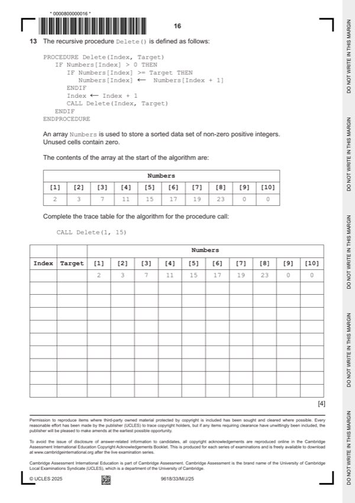

Question 0
Part 0 — solution
1 1 1 1 1 1 1 0 1 1 1 1 1 1 1
127 2120 // 0.9921875 x 2127 // 127/128 x 2127
Mark points
- Include the ideas shown in the solution above.
Step-by-step solutions based on the mark scheme (not a mark-scheme dump).
Part 0 — solution

Part 1(a) — solution
Part 1(b) — solution
Part 1 — solution
Part 1 — solution
Part 2(a) — solution
Part 2(b) — solution

Part 3(a) — solution
Part 3(b)(i) — solution
Answer: AB
Part 3(b)(ii) — solution
Answer: AB
Part 3(b)(iii) — solution

Part 4(a) — solution
Part 4(b) — solution
Part 4 — solution
Answer: 5 17
Part 5 — solution
Part 6(a) — solution
Part 6(b) — solution

Part 7 — solution
Part 8 — solution

Part 9(a) — solution
Part 9(b) — solution
Part 9(c) — solution
Part 9 — solution

Part 10(a) — solution
Part 10(b) — solution
Part 10(c) — solution
Part 11 — solution

Part 12(a) — solution
Part 12(b) — solution
Part 12(c) — solution

Part 13 — solution